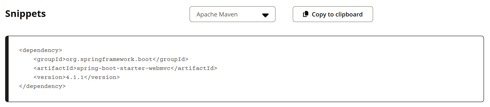
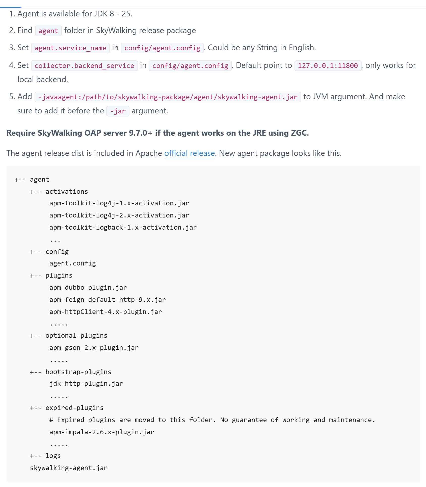
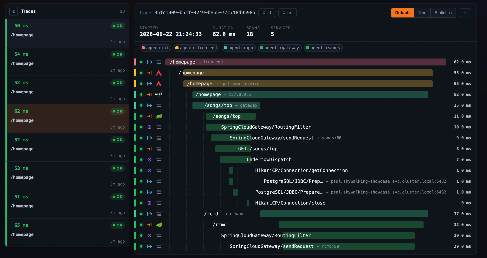
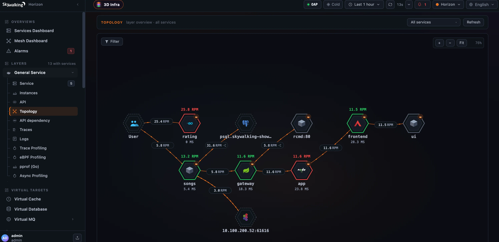

OSS PROJECT INTRO · SKYWALKING 系列第 4 期：实战场景
上一期我们拿到了概念地图：Trace 怎么按进程切段、sw8 头怎么跨进程续链、拓扑和指标怎么被 OAP 算出来。本期把地图用起来，端到端做一个跨进程调用链追踪：两个极简 Spring Boot 服务互相调用，各自挂上 agent，压几笔请求后，链路在 UI 里串成一条——瀑布逐行对号入座第 3 期概念，拓扑自己长出一条边，"慢在哪一跳"一眼定位。接入口径逐条对照官方文档（2026-09 核对），引用什么核什么。
先对齐进度。第 1 期立住了"无侵入"的心智模型，第 2 期一条命令起了全家、挂 agent 看见第一条调用链，第 3 期拆透了概念地图：Trace → Segment → Span 三层模型、sw8 上下文传播、OAP 流式聚合。本期是系列第 4 期实战，所有概念都要在两个真实进程之间走一遍：
本期有两个钩子：其一，零代码自动埋点 vs 手动埋点到底怎么分工；其二，开头那个排障需求——慢在哪一跳——四步定位法当场收掉。演示链共五幕，占全期一半以上篇幅，跟着敲就能复现。
需求摆上桌：用户反馈下单接口慢，你要回答三连问。传统手段和挂上 agent 之后各有答案：
| 要回答的问题 | 翻日志的排障法 | 挂上 agent 之后 |
|---|---|---|
| 哪个接口慢？ | 登多台机器，按时间戳对日志 | Trace 列表按耗时倒序，最慢的链置顶 |
| 慢在哪一跳？ | 把各服务日志拼成时间线猜 | 瀑布逐段看时长条，长段一目了然 |
| 为什么慢？ | 凭经验猜：慢查询、锁还是 GC | 段内下钻：Span 明细绑定日志继续查 |
微服务一多，"翻日志对时间戳"就抓瞎：一次请求横跨多个进程，谁也没有全局视角。这正是第 1 期讲的痛点——追踪系统把"一次请求"重新变成一个可以整体观察的对象。本期就用一个最小复现：两个服务、一条 HTTP 调用，把三连问的答案亲手做出来。
动代码之前先回答一个选型问题：埋点是谁做的？官方给两条路，定位完全不同：
| agent 自动埋点（本期主线） | 手动埋点 apm-toolkit（进阶补充） |
|---|---|
0 行代码改动，-javaagent 挂上就生效 | @Trace 注解标业务方法，瀑布多一个 LocalSpan |
| 框架插件全织入：Spring MVC、RestTemplate、JDBC、Redis…… | 补上 agent 看不见的业务语义：缓存命中、分片键 |
| 升级插件即跟上新框架，应用不用重发版 | 业务关键路径主动打标，排查更快 |
| 代价：埋点粒度由插件决定，业务语义它不会猜 | 代价：要加依赖、要动代码 |
结论先给：两者是配合关系，不是二选一。框架调用交给插件自动织入（第 5 期讲它怎么做到的），业务语义用工具包手动补标（本期末尾演示）。绝大多数接入从零代码开始，等瀑布里"看不见业务"了，再补注解。
动手前先钉版本。两个示例服务用 Spring Boot 4.1.1（Maven Central 当前最新 GA，2026-08-20 发布；4.2.0-M1 是里程碑预发布，生产不追）。注意一个 Boot 4 的新变化：Web 起步器改名 spring-boot-starter-webmvc，经典的 spring-boot-starter-web 已标记弃用，新项目直接用新坐标：

Maven Central 实拍：spring-boot-starter-webmvc 4.1.1 依赖片段可直接抄；同页 Versions 列表显示 4.1.1（2026-08-20）为最新 GA、4.2.0-M1 为里程碑预发布（2026-09-19 截图）。被调方 demo-api（8081），一个睡 800 毫秒的慢接口——它是本期唯一的"病灶"：
// demo-api：被调方（8081），模拟慢查询
@RestController
public class ApiController {
@GetMapping("/api")
public String api() throws InterruptedException {
Thread.sleep(800); // 模拟一次 800ms 的慢查询
return "ok";
}
}入口 demo-app（8080），用经典的 RestTemplate 转调下游——特意换了第 2 期没用过的客户端：官方插件清单里 spring-resttemplate 从 3.x 到 6.x 一条线在列，换了客户端照样织入：
// demo-app：入口（8080），RestTemplate 转调 demo-api
@RestController
public class OrderController {
RestTemplate rest = new RestTemplate();
@GetMapping("/order")
public String order() {
return rest.getForObject("http://127.0.0.1:8081/api", String.class);
}
}两个服务各自独立打包成 jar。注意看：除了业务逻辑，没有任何一行 SkyWalking 的依赖或注解——这正是第 3 页"零代码接入"的实物。为什么非要两个服务？拓扑图的"边"至少要两个节点才画得出来；一次请求跨两个 JVM，瀑布和拓扑才有戏唱。版本兼容性官方口径也省心：agent 支持列表明确列有 Spring Boot Web 4.x 条目（agent v9.7.0）。
接入方式回到官方文档的五步，还是第 2 期那套：确认 JDK（8-25）、找到 agent 目录、设服务名、设后端地址、-javaagent 放在 -jar 之前：

官方《Setup java agent》快速开始原文：JDK 8-25、agent.service_name（任意英文字符串）、collector.backend_service（默认 127.0.0.1:11800）、-javaagent 放在 -jar 之前；下方是新包目录结构（2026-09-19 截图，正文主栏）。先起被调方 demo-api，挂上第一个 agent（-Dskywalking.* 系统属性覆盖 agent.config 是官方覆盖机制，路径换成你的解压路径）：
java -javaagent:/path/to/agent/skywalking-agent.jar \
-Dskywalking.agent.service_name=demo-api \
-Dskywalking.collector.backend_service=localhost:11800 \
-jar demo-api.jar --server.port=8081再起入口 demo-app，命令同款，只有服务名和端口不同。然后连发五笔请求触发：
java -javaagent:/path/to/agent/skywalking-agent.jar \
-Dskywalking.agent.service_name=demo-app \
-Dskywalking.collector.backend_service=localhost:11800 \
-jar demo-app.jar --server.port=8080
for i in 1 2 3 4 5; do curl -s http://localhost:8080/order; done终端回显五个 ok，但每笔都等了约 0.8 秒才返回——慢，用户已经感觉到了。本期唯一要留心的接入细节：两个服务共用同一份 agent，服务名必须不同（demo-app / demo-api），拓扑上的两个节点靠它区分。另外 agent 是纯客户端，只出不进，不占业务端口；OAP 就是第 2 期起的那个，收数口 11800 别填成查询口 12800。
打开 Horizon UI 的 Trace 页，按耗时排序，最慢的链置顶。点开任意一条，瀑布长这样（官方 Horizon UI 实拍，展示环境数据）：

官方 Horizon UI 的 Trace 详情实拍（官方博客素材）：顶部 traceId、总耗时、Span 数、服务数；瀑布逐行一个 Span，服务各自着色，条长即耗时。demo-app → demo-api 的链结构与画面同构（2026-09-19 取自官方站点原图）。我们的链会比画面更简洁：两个 Segment、三行 Span。把瀑布解剖开，就是第 3 期那张概念图在两个真实进程里各走了一遍（自绘）：
瀑布逐行对号入座第 3 期概念，每一格都有实物：
| 瀑布里的一行 | 第 3 期概念 | 本期实例中的值 |
|---|---|---|
demo-app /order 顶行 | EntrySpan 入口 | 整链起点，含下游等待，约 815 毫秒 |
demo-app 指向 /api 一行 | ExitSpan 出口 | sw8 头在这一步注入请求 |
demo-api /api 一行 | 跨进程新段的 EntrySpan | 约 805 毫秒，耗时大头在这段 |
| 顶栏同一个 traceId | Trace 全局串链 | 两个 Segment 靠它拼成一条链 |
再看拓扑页：压完请求几分钟内，画布上自动长出一条有向边，从入口服务指向被调服务，边上标着调用量。第 3 期说"拓扑是算出来的，不是画出来的"——出口 Span 加对面入口 Span 构成一次调用对，聚合内核把它折算成边，你从头到尾没有画过一行配置：

官方 Horizon UI 拓扑实拍（官方博客素材）：六边形节点带健康色环，边上标每分钟调用量。demo-app 会指向 demo-api 长出同款一条边，全程零配置（2026-09-19 取自官方站点原图）。开头的需求现在收口。"慢在哪一跳"不需要灵感，是一套固定动作：
本期 800 毫秒是 Thread.sleep 模拟的，方法是真的：这套动作不挑框架、不挑语言，任何接入了 SkyWalking 的微服务系统里都一样。真实系统里锁段之后还有一步——段内往往不只一行 Span，JDBC、Redis 调用各占一行，哪行最长，嫌疑最大。
想再进一步，把业务方法也搬进瀑布？这就是第 3 页说的手动埋点。加一个工具包依赖，方法上打个注解：
// pom 加依赖：org.apache.skywalking:apm-toolkit-trace
import org.apache.skywalking.apm.toolkit.trace.Trace;
@Trace(operationName = "/order/queryCache") // 织入一个 LocalSpan
public String queryCache() {
return localCache.get(key); // 业务逻辑不动
}重启后，瀑布里 demo-app 段多出一行 LocalSpan /order/queryCache。注意它的定位：框架调用已经有人埋了，你补的只是业务语义——缓存查了哪次、分片走了哪片，用 @Tag 自己打标，agent 不会猜。全期要动代码的只有这一小步，而且它和自动埋点是叠加关系，不是替换。
logs/skywalking-api.log；service_name，OAP 把它们当成一个服务，边自然消失；backend_service 填错口——收数 11800、查询 12800，agent 只认 11800，口诀"收 11 出 12"；-jar 之前（官方特意强调的顺序），放后面 JVM 不认；optional-plugins 目录，把 jar 拷进 plugins 才启用——第 2 期讲过"挪动即启停"。决定因素是调用方向，不是框架。官方对三类 Span 的定义都围绕"谁提供服务、谁发起调用"：服务提供者的端点记 EntrySpan（Tomcat 收到请求、MQ 消费者收到消息），向外打出的调用记 ExitSpan（HTTP 客户端、JDBC、Redis 客户端），进程内普通方法记 LocalSpan。所以同一个 agent 挂在 demo-app 上，Tomcat 拦截点在"收"的方向，生成 Entry；RestTemplate 拦截点在"发"的方向，生成 Exit；挂到 demo-api 上，同样的 Tomcat 拦截点生成的还是 Entry——类型跟着拦截点在调用方向上的角色走，插件作者只需要回答"这个类的方法是收还是发"。
再深一层是嵌套出口的抑制机制：一次业务调用里若层层包了多个 ExitSpan（先过自封装的 HTTP 工具类，再进 RestTemplate），官方的处理是只有最外层的 ExitSpan 真正上报，内层的被抑制——否则拓扑上一次逻辑调用会被算成多次，服务间流量就虚高了。这条规则顺带解释了为什么拓扑边稳定可信：边的原料（出口-入口调用对）在采集端就被去重约束过。动手验证的方法本期已经备好：在 demo-app 里再包一层 HTTP 工具类连调两次下游，数一数瀑布里 Exit 行数和拓扑边上的调用量对不对得上。
形态会变，但模型不变。瀑布不再是"一条时间线上的两段"：生产者段和消费者段在时间上解耦——发送那一刻和消费那一刻可能隔几秒、甚至分属不同批次。第 3 期讲过，跨线程、跨进程边界都要切段，MQ 场景切得更彻底：生产者侧一个 Segment（业务 Span + 消息发送的 ExitSpan），消费者侧另一个 Segment（MQ 消费的 EntrySpan + 业务 Span），中间靠引用（reference）挂父子。sw8 头依然传播，只是不再走 HTTP 头，而是随消息体走——官方的做法是把上下文写进消息的属性/头字段（如 Kafka 的 message header），各消息插件负责注入解析，sw8-x 扩展头里还带发送时间戳，供 OAP 分析消息链路的耗时。
拓扑上的边依然存在（生产服务指向 Topic、Topic 指向消费服务），但读法要变：这条边不代表"同步等待"，两端各自独立记耗时——这也是排障时的关键差别，同步链路的"慢"看瀑布条长，异步链路的"慢"要先看消费延迟（消费时间戳减发送时间戳），再进各自的段。顺带回答一个衍生问题：为什么本期演示选 HTTP 而不是 MQ？因为同步链路的时间线最直观，适合第一次建立"两段连成一条链"的画面感；MQ 场景等你熟了模型，只是把"连"的方式从时间线换成引用。
带走这五句：
-javaagent 放在 -jar 之前、service_name 用英文区分节点、backend_service 指向收数口 11800；@Trace 给业务方法补 LocalSpan。下期预告：第 5 期《架构与源码导读》——这条链你已经能自己追了。下一期我们进源码，看字节码增强是怎么无声无息做到的：agent 在类加载那一刻改了什么、插件怎么匹配类与方法、ByteBuddy 织入的骨架长什么样。
Primary source：SkyWalking Java agent 官方文档 · Setup java agent（latest，与 agent v9.7.0 匹配）——本期接入口径（JDK 范围、三参数、-javaagent 顺序）均出自该页；插件覆盖见 Plugin list，兼容范围见 Supported list，手动埋点见 Application Toolkit @Trace；UI 实拍图取自官方博客 Meet Horizon UI · The Trace Explorer 与 Topology & Service Dependency。
1. 两个服务要成为拓扑上的两个独立节点，靠哪个参数区分？
2. 按官方强调的顺序，-javaagent 参数应该放在哪？
3. 瀑布里 demo-app 指向 /api 的那一行，Span 类型是？
4. 四步定位法里，"锁段"一步看的是什么？